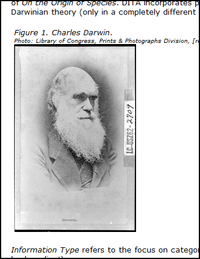

Images are placed in topic content using the
image element. The image element can stand alone, or can be
contained within a figure (fig) element.
Although images can be placed in a DITA topic as
image elements without a surrounding
figure element, figures are generally the best way to
structure graphics and other illustrations. The exception is for simple inline
images (that is, images that are part of the flow of the text), where an
independent
image element should be used.
Most commonly, images are stored is separate files external to DITA, but
it is possible to embed XML-based image formats, such as
SVG, within the DITA topic XML.
Figures in DITA are container elements typically comprising
a
title element, an
image element, and a
desc element.
The following example shows the DITA code for a typical figure.
<fig>
<title>Charles Darwin</title>
<desc>
<cite>Photo: Library of Congress, Prints & Photographs
Division, [reproduction number, LC-USZ61-104]</cite>
</desc>
<image placement="inline" align="right" width="208px" height="320px"
href="../images/darwin_library_of_congress.jpg">
<alt>Photo of Charles Darwin: Library of Congress, Prints and
Photographs Division, [reproduction number, LC-USZ61-104]</alt>
<image>
</fig>
The
title element contains a short, descriptive title of the
figure. The
image element's attributes contains the location,
dimensions and placement of the image file, and a child
alt element containing an alternative text description of
the image (for reading devices that don't display images or readers who don't
see images). The
desc element contains further information about the image,
including any photo credits or citations.
Although the
title element appears before the
img element in DITA mark-up, the sequence can be altered
in the output by modifying the publishing process. Do not break the semantics
by using workarounds (such as moving the
title to
figgroup element after the
img) to achieve a formatting outcome.
The sample figure DITA code might result in the following when
transformed into XHTML.
Example of a figure rendered in XHTML

Rationale
Answering a question about whether images should be placed directly
(in a stepresult element) or in a figure structure:
I'd say that
if everything is working for you now, there is no need to change
anything...doesn't seem like there is any tag abuse going on. <fig>, to
my thinking, is to be used when you need to add a caption, description or other
data to an <image>. Some groups prefer the practice of using
<image> only for inline images and <fig> for all others, but unless
you really need the additional data, I think <fig> is overkill. Your main
concern is, if you are editing transforms, to make sure that you are
accommodating both <image> and <fig> correctly. The default OT
transforms already do this. As for <ul> vs. <choices>, while
<choices> is the more semantically accurate tag for that kind of
information, it is, after all, just a specialization of <ul>. So, if you
do not find it a problem that your choices are not absolutely semantically
tagged as such, then there's no functional reason to change it.